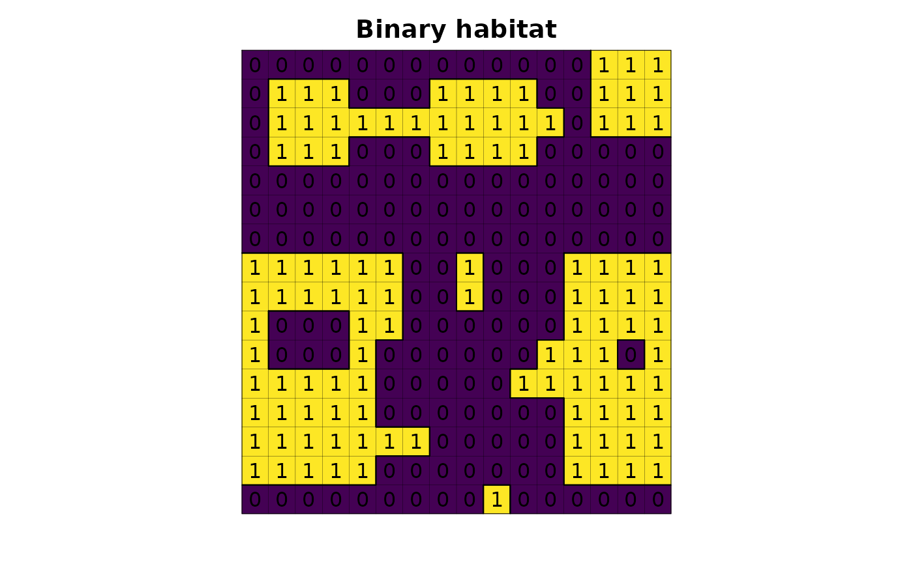
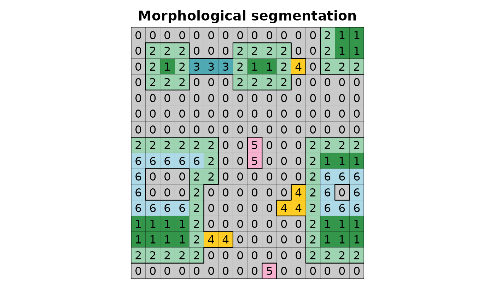

Identifies landscape morphological segmentation
Source:R/lsm_morphological_segmentation.R
lsm_morphological_segmentation.RdIdentifies landscape morphological segmentation: matrix, core, edge, corridor, stepping stone, branch, and perforation
Usage
lsm_morphological_segmentation(
input,
output = NULL,
zero_as_null = FALSE,
region_input = FALSE,
morphological_segmentation = "all",
table_morphological_segmentation = FALSE,
area_round_digit = 0,
area_unit = "ha",
nprocs = 1,
memory = 300
)Arguments
- input
[character=""]
Habitat map, following a binary classification (e.g. values 1,0 or 1,NA for habitat,non-habitat) inside GRASS Data Base.- output
[character=""]
Map name output inside GRASS Data Base.- morphological_segmentation
[character=""]- nprocs
[numeric()]- memory
[numeric()]- zero_as_na
[logical(1)=FALSE]
IfTRUE, the function treats non-habitat cells as null; ifFALSE, the function converts non-habitat zero cells to null cells.
Examples
library(lsmetrics)
library(terra)
# read habitat data
r <- lsmetrics::lsm_toy_landscape(proj_type = "degrees")
# plot
plot(r, legend = FALSE, axes = FALSE, main = "Binary habitat")
plot(as.polygons(r, dissolve = FALSE), lwd = .1, add = TRUE)
plot(as.polygons(r), add = TRUE)
text(r)

# find grass
path_grass <- system("grass --config path", inter = TRUE) # windows users need to find the grass gis path installation, e.g. "C:/Program Files/GRASS GIS 8.3"
# create grassdb
rgrass::initGRASS(gisBase = path_grass,
SG = r,
gisDbase = "grassdb",
location = "newLocation",
mapset = "PERMANENT",
override = TRUE)
#> gisdbase grassdb
#> location newLocation
#> mapset PERMANENT
#> rows 16
#> columns 16
#> north -22.35558
#> south -22.36995
#> west -47.58312
#> east -47.56875
#> nsres 0.000898125
#> ewres 0.000898125
#> projection:
#> GEOGCRS["WGS 84",
#> ENSEMBLE["World Geodetic System 1984 ensemble",
#> MEMBER["World Geodetic System 1984 (Transit)"],
#> MEMBER["World Geodetic System 1984 (G730)"],
#> MEMBER["World Geodetic System 1984 (G873)"],
#> MEMBER["World Geodetic System 1984 (G1150)"],
#> MEMBER["World Geodetic System 1984 (G1674)"],
#> MEMBER["World Geodetic System 1984 (G1762)"],
#> MEMBER["World Geodetic System 1984 (G2139)"],
#> ELLIPSOID["WGS 84",6378137,298.257223563,
#> LENGTHUNIT["metre",1]],
#> ENSEMBLEACCURACY[2.0]],
#> PRIMEM["Greenwich",0,
#> ANGLEUNIT["degree",0.0174532925199433]],
#> CS[ellipsoidal,2],
#> AXIS["geodetic latitude (Lat)",north,
#> ORDER[1],
#> ANGLEUNIT["degree",0.0174532925199433]],
#> AXIS["geodetic longitude (Lon)",east,
#> ORDER[2],
#> ANGLEUNIT["degree",0.0174532925199433]],
#> USAGE[
#> SCOPE["Horizontal component of 3D system."],
#> AREA["World."],
#> BBOX[-90,-180,90,180]],
#> ID["EPSG",4326]]
# import raster from r to grass
rgrass::write_RAST(x = r, flags = c("o", "overwrite", "quiet"), vname = "r", verbose = FALSE)
# morphological_segmentation
lsmetrics::lsm_morphological_segmentation(input = "r", table_morphological_segmentation = TRUE)
#> Converting zero as null
#> Identifying fragments
#> Identifying matrix
#> Identifying core
#> Identifying stepping stone
#> Identifying edge
#> Converting zero as null
#> Identifying fragments
#> Creating matrix
#> Filling holes
#> Cleaning data
#> WARNING: Raster map
#> <r_morphological_segmentation_binary_aux_fill_hole_matrix_id@PERMANENT>
#> is a base map for
#> <r_morphological_segmentation_binary_aux_fill_hole_matrix_id_fill@PERMANENT>.
#> Remove forced.
#> Identifying branch, corridor and perforation
#> Color table for raster map
#> <r_morphological_segmentation_branch_corridor_id_dila> set to
#> 'r_morphological_segmentation_branch_corridor_id'
#> Identifying perforation
#> Identifying corridor
#> Identifying branch
#> Changing raster color
#> Table exporting
#> Cleaning data
# files
rgrass::execGRASS(cmd = "g.list", type = "raster")
#> r
#> r_morphological_segmentation
#> r_morphological_segmentation_branch
#> r_morphological_segmentation_core
#> r_morphological_segmentation_corridor
#> r_morphological_segmentation_edge
#> r_morphological_segmentation_matrix
#> r_morphological_segmentation_perforation
#> r_morphological_segmentation_stepping_stone
# import from grass to r
r_morphological_segmentation <- rgrass::read_RAST("r_morphological_segmentation", flags = "quiet", return_format = "terra")
# plot
plot(r_morphological_segmentation, legend = FALSE, axes = FALSE, main = "Morphological segmentation")
plot(as.polygons(r, dissolve = FALSE), lwd = .1, add = TRUE)
plot(as.polygons(r), add = TRUE)
text(r_morphological_segmentation)

# table
table_morphological_segmentation <- readr::read_csv("r_table_morphological_segmentation.csv", show_col_types = FALSE)
table_morphological_segmentation
#> # A tibble: 7 × 4
#> morphological_segmentation morphological_segmentation_id area ncell
#> <chr> <dbl> <dbl> <dbl>
#> 1 matrix 0 134 146
#> 2 core 1 22 24
#> 3 edge 2 51 55
#> 4 corridor 3 3 3
#> 5 branch 4 6 6
#> 6 stepping_stone 5 3 3
#> 7 perforation 6 17 19
# delete grassdb
unlink("r_table_morphological_segmentation.csv")
unlink("grassdb", recursive = TRUE)